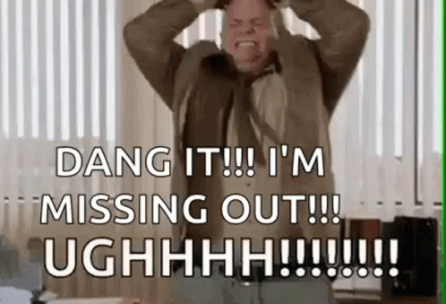

How do I stop myself from feeling jealous…
When everyone seems to be having fun ...
Everyone Having Fun Without Me
Are You Having Fun Without Me?
Live Happy? How?

Unique experience with FOMO
Cannot handle it emotionally when my LOs are having ...
FOMO, a feeling of anxiety or insecurity over the
Fear of Missing Out
Have Fun Without Me
Have More Fun Without Me
Drown me out
Drown me out

TV and rusty old bike for me
Important perspective I bring
Silly phenomenon
Missing the fun
Waiting waiting for someone to answer
